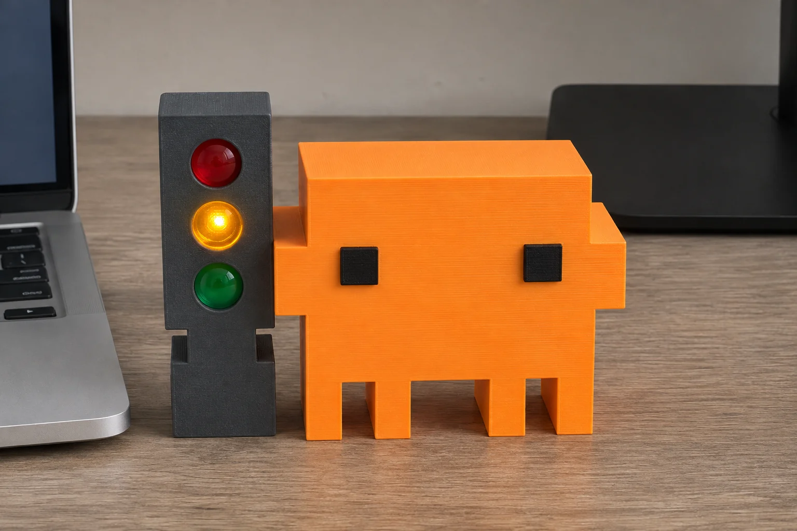
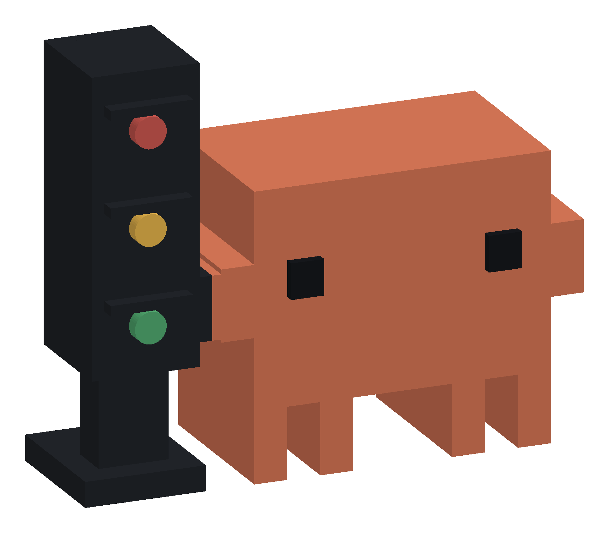
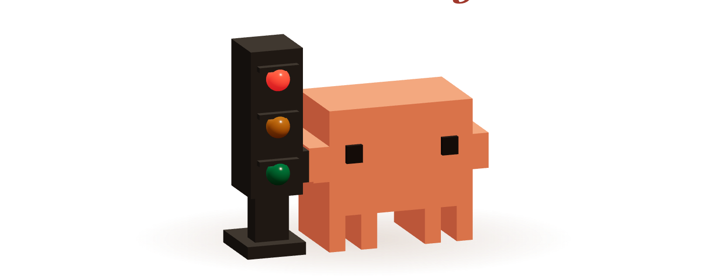
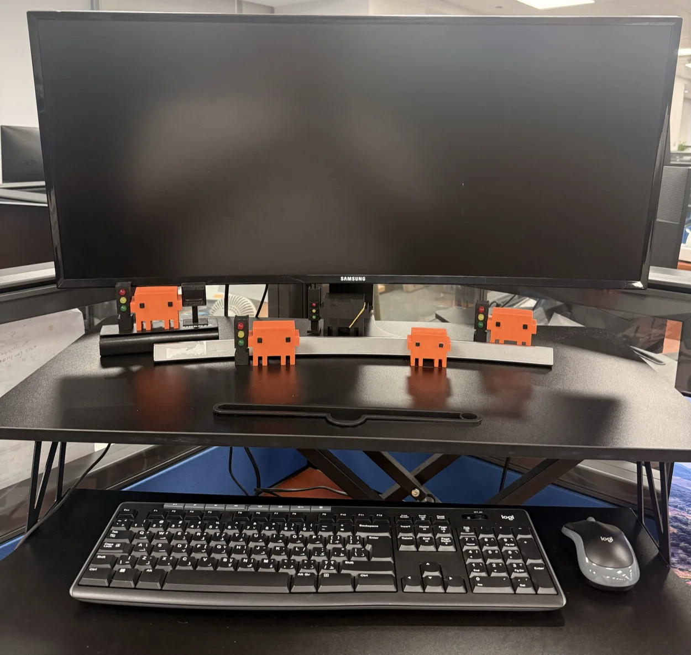
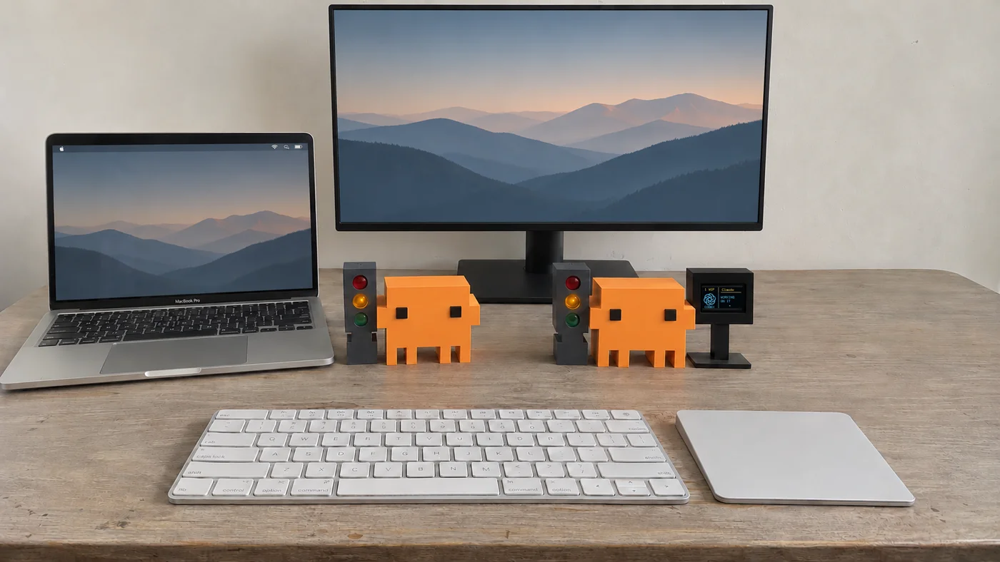
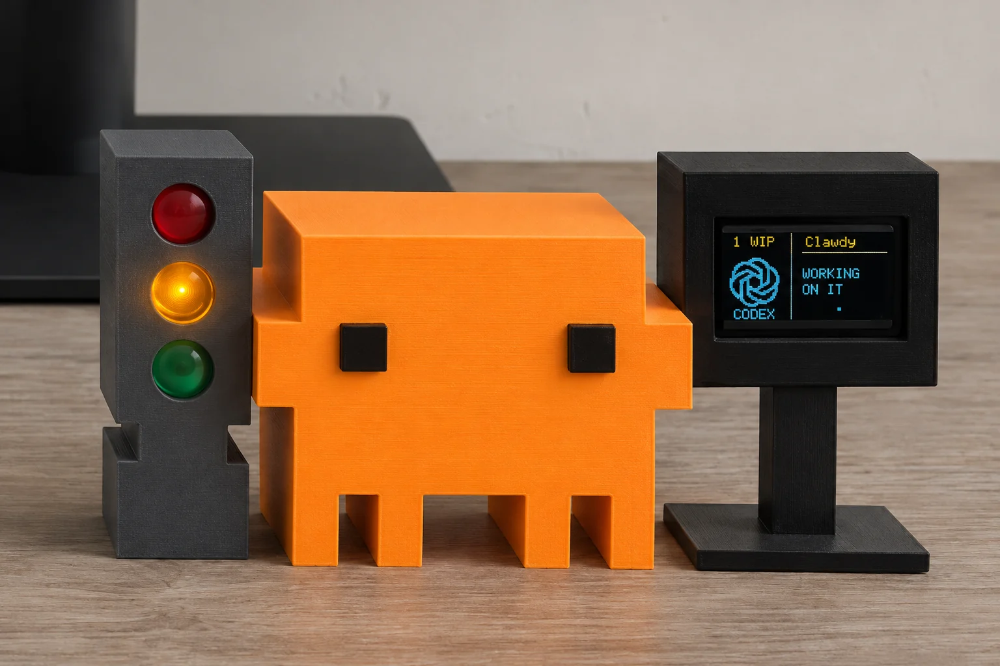

Clawdy
139 AED
- Three lights for working, done, and needs you.
- USB power and Bluetooth.

clawdy.A TRAFFIC LIGHT FOR YOUR AI CODING CHATS
Your AI agent asked a question at 9:05. You checked at noon. Clawdy tells you when it needs you.
Explore Clawdy in 3D ↓Virtual Clawdy is available as a source preview.
BUILD FROM SOURCE
Choose your computer, then paste its prompt into an AI assistant that can run commands on it.
Help me set up the Virtual Clawdy source preview on this Mac from https://github.com/alfonsoforcen3/Clawdy-Companion. Use docs/TRY_VIRTUAL_CLAWDY.md. Check for macOS 13 or newer, Apple Command Line Tools and /usr/bin/python3. Reuse a valid existing checkout or clone the repo, then build to a separate local cache. If anything is missing, explain how to get it and ask before installing it. After the build, tell me how to launch the sample-data demo and ask before opening it or replacing an existing trial. Skip Bluetooth, provider hooks and startup changes.
Help me set up the Virtual Clawdy source preview on this Windows 11 PC from https://github.com/alfonsoforcen3/Clawdy-Companion. Follow desktop/windows/README.md for the tray app. In native Windows PowerShell, check the OS architecture, Git, the .NET 10 SDK and native Python 3.9 or newer. Reuse a valid checkout or clone the repo. Build with desktop/windows/build.ps1 for the actual OS architecture and check the reported output for Clawdy.Windows.exe. If py -3 is unavailable, verify a native Python executable and use its full path with --python. Start with --demo, and ask before launching or installing prerequisites. If policy blocks a step, explain where it stopped. Skip Bluetooth, provider hooks and startup changes.
01 / RED LIGHT
02 / AMBER LIGHT
03 / GREEN LIGHT

Still illustration · 3D unavailableFULL WALKTHROUGH · 46 SECONDS
LOCAL AI CODING TOOLS
Other local tools can connect with a custom integration Browser AI chats are unsupported.


02 / THE DESK COMPANIONS
Physical Clawdy mirrors the status from your computer over Bluetooth.
PHYSICAL CLAWDY

139 AED

229 AED
BASED IN DUBAI. MADE FOR YOUR CORNER OF THE WORLD.
Support payments are coming later.
INTERACTIVE DEMO
Your chats are working.